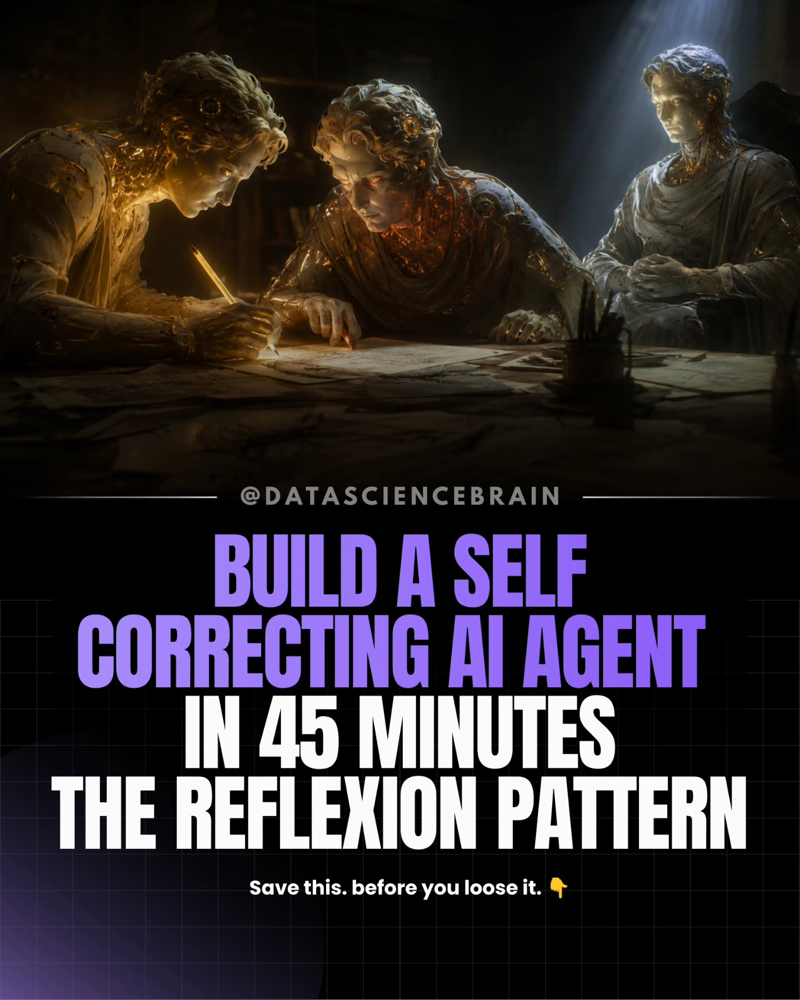
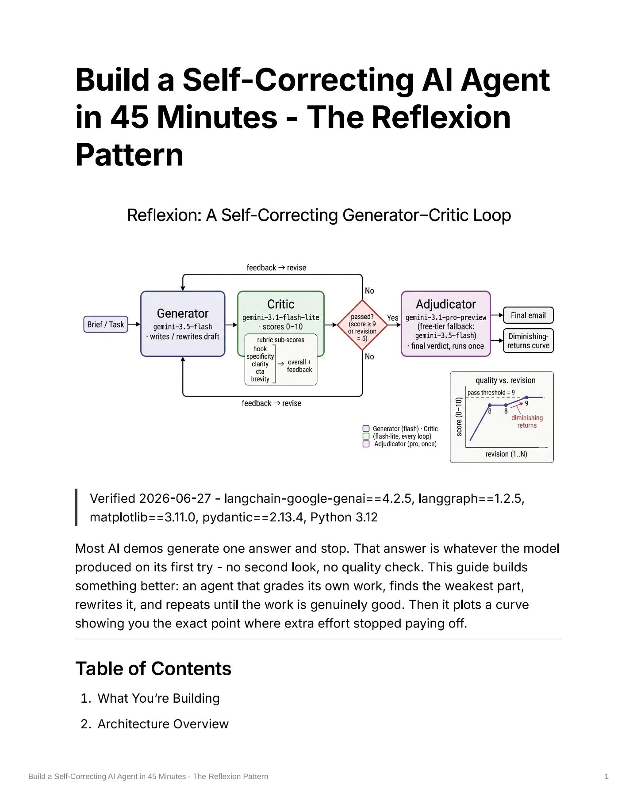
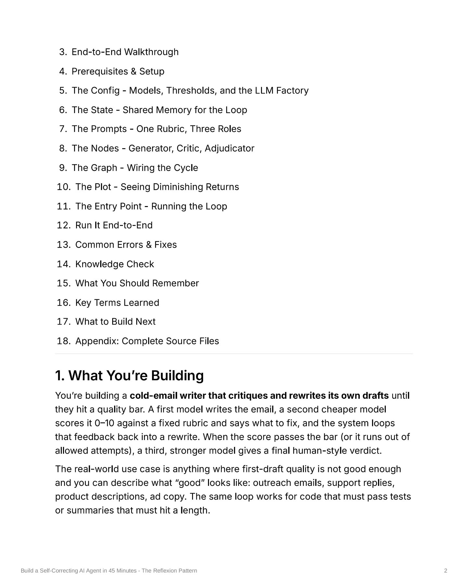
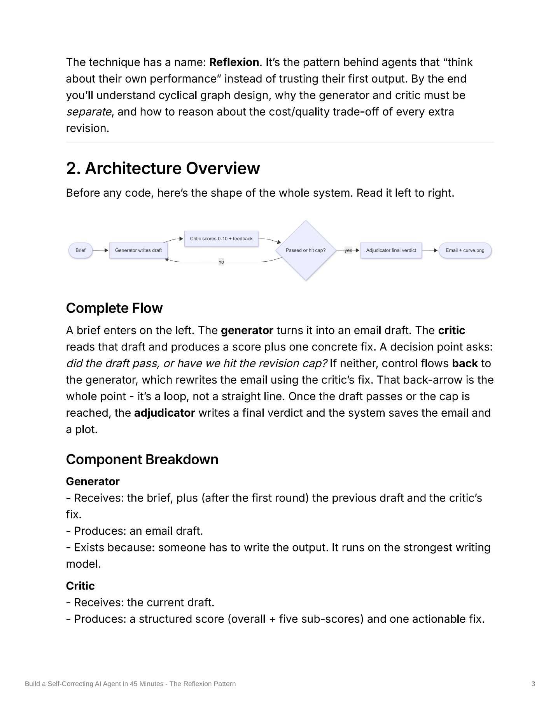
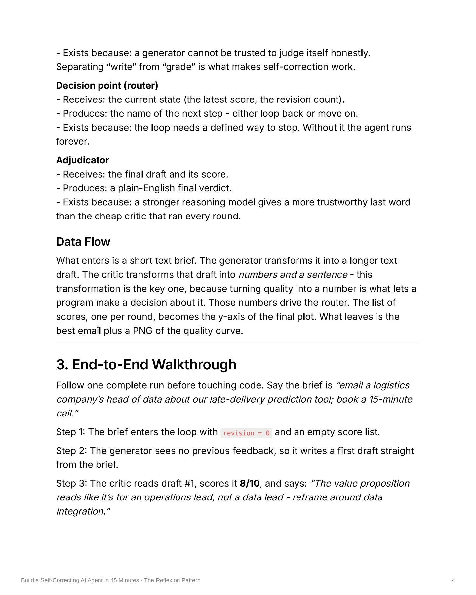
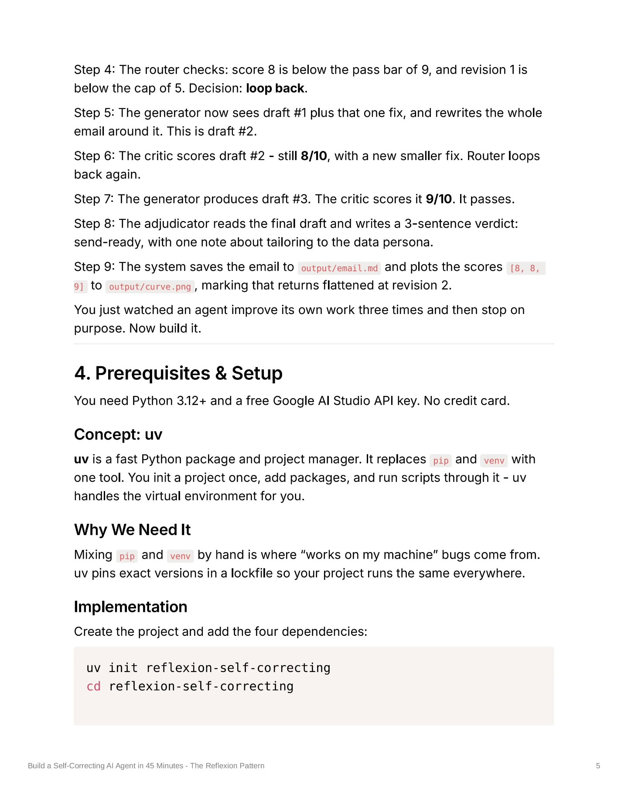
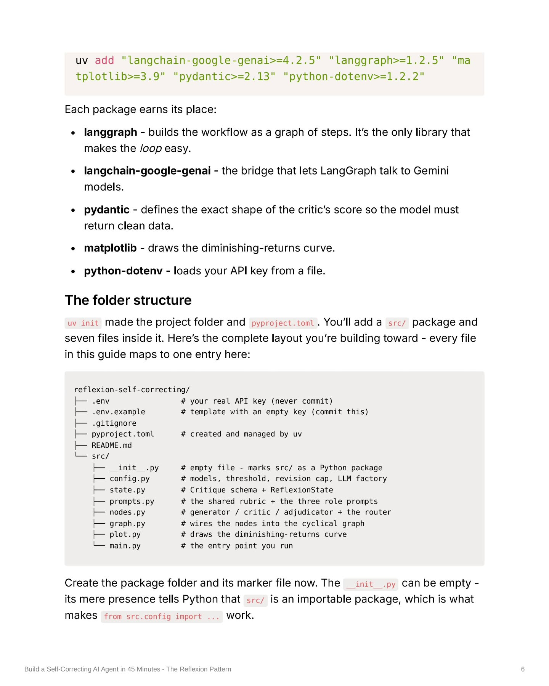
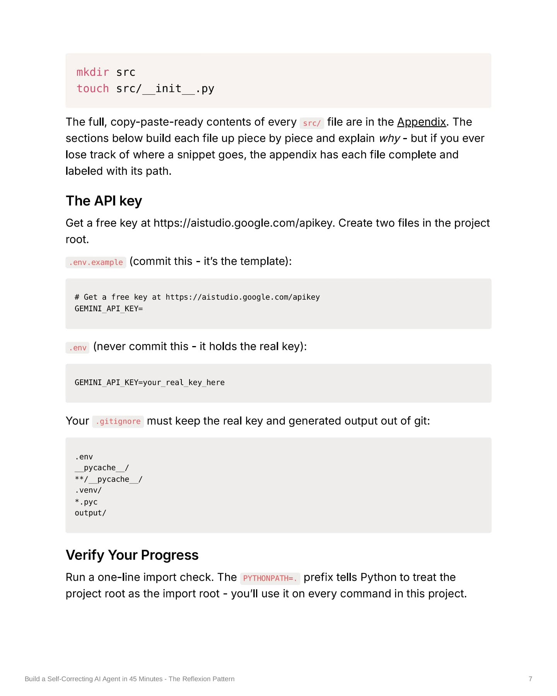
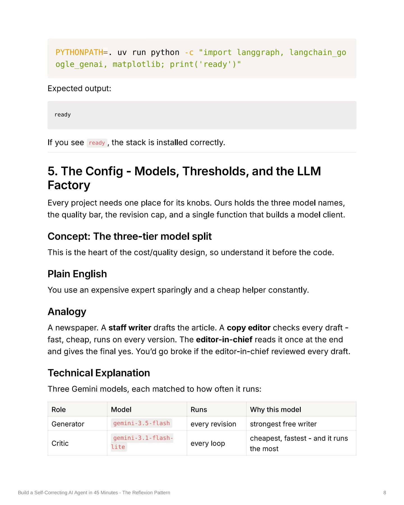

Instagram Post

datasciencebrain on June 27, 2026: "Your AI gives...
carousel (10 slides) (enriched by ClaudeClaw)
Summary
BUILD A SELF CORRECTING AI AGENT IN 45 MINUTES THE REFLEX... | Build a Self-Correcting AI Agent in 45 Minutes - The Refl... | 3 | The technique has a name: Reflexion | Exists because: a generator cannot be trusted to judge it... | Step 4: The router checks: score 8 is below the pass bar ... | uv add "langchain-google-genai>=4.2.5" "langgraph>=1.2.5"... | mkdir src touch src/__init__.py The full...
Caption
datasciencebrain on June 27, 2026: "Your AI gives you one answer and stops.
That answer is just its first try. No second look. No quality check.
Here's an agent that grades its own work - and rewrites it until it's actually good.
→ A generator writes a cold email
→ A critic scores it 0–10 on a rubric
→ Fails? It loops back with feedback
→ Passes? A stronger model gives the final verdict
→ Then it plots the curve where extra revisions stop helping
This is the Reflexion pattern - agents that reason about their own performance. 🔁
A PDF Version of the complete Guide is shared with our Exclusive Instagram Subscribers 👑. Get access to it with 1000+ other FREE Resources for just Rs.45 per month❗️.
Follow @datasciencebrain for daily AI notes 📝,tips ⚙️ and interview Q&A 🎯
.
.
.
.
.
.
[dataanalytics, artificialintelligence, deeplearning, bigdata, agenticai, aiagents, statistics, dataanalysis, datavisualization, analytics, datascientist, neuralnetworks, 100daysofcode, llms, datasciencebootcamp, ai]
#datascience #pythonforai #machinelearning #genai #aiengineering".
1
@DATASCIENCEBRAIN BUILD A SELF CORRECTING AI AGENT IN 45 MINUTES THE REFLEXION PATTERN Save this. before you loose it.👇
The image depicts three figures resembling ancient statues, two of whom are actively writing or studying documents on a table, with the bottom half displaying text on a dark grid background.
2
Build a Self-Correcting AI Agent in 45 Minutes - The Reflexion Pattern Reflexion: A Self-Correcting Generator-Critic Loop Brief / Task Generator gemini-1.5-flash writes / rewrites draft feedback -> revise Critic gemini-1.3-flash
3
3. End-to-End Walkthrough 4. Prerequisites & Setup 5. The Config - Models, Thresholds, and the LLM Factory 6. The State - Shared Memory for the Loop 7. The Prompts - One Rubric, Three Roles 8. The Nodes - Generator, Critic, Adjudicator 9. The Graph - Wiring the Cycle 10. The Plot - Seeing Diminishing Returns 11. The Entry Point - Running the Loop 12. Run It End-to-End 13. Common Errors & Fixes 14. Knowledge Check 15. What You Should Remember 16. Key Terms Learned 17. What to Build Next 18. Appendix: Complete Source Files 1. What You're Building You're building a cold-email writer that critiques and rewrites its own drafts until they hit a quality bar. A first model writes the email, a second cheaper model scores it 0-10 against a fixed rubric and says what to fix, and the system loops that feedback back into a rewrite. When the score passes the bar (or it runs out of allowed attempts), a third, stronger model gives a final human-style verdict. The real-world use case is anything where first-draft quality is not good enough and you can describe what "good" looks like: outreach emails, support replies, product descriptions, ad copy. The same loop works for code that must pass tests or summaries that must hit a length. Build a Self-Correcting AI Agent in 45 Minutes - The Revision Pattern 2
A white document page displays a numbered list of topics, followed by a heading and two paragraphs of text describing the building of a self-correcting AI agent.
4
The technique has a name: Reflexion. It's the pattern behind agents that "think about their own performance" instead of trusting their first output. By the end you'll understand cyclical graph design, why the generator and critic must be separate, and how to reason about the cost/quality trade-off of every extra revision. 2. Architecture Overview Before any code, here's the shape of the whole system. Read it left to right. Brief Generator writes draft Critic scores 0-10 + feedback Passed or hit cap? Adjudicator final verdict Save + return p/g Complete Flow A brief enters on the left. The generator turns it into an email draft. The critic reads that draft and produces a score plus one concrete fix. A decision point asks: did the draft pass, or have we hit the revision cap? If neither, control flows back to the generator, which rewrites the email using the critic's fix. That back-arrow is the whole point - it's a loop, not a straight line. Once the draft passes or the cap is reached, the adjudicator writes a final verdict and the system saves the email and a plot. Component Breakdown Generator - Receives: the brief, plus (after the first round) the previous draft and the critic's fix. - Produces: an email draft. - Exists because: someone has to write the output. It runs on the strongest writing model. Critic - Receives: the current draft. - Produces: a structured
5
Exists because: a generator cannot be trusted to judge itself honestly. Separating "write" from "grade" is what makes self-correction work. Decision point (router) - Receives
6
Step 4: The router checks: score 8 is below the pass bar of 9, and revision 1 is below the cap of 5. Decision: loop back. Step 5: The generator now sees draft #1 plus that one fix, and rewrites the whole email around it. This is draft #2. Step 6: The critic scores draft #2 - still 8/10, with a new smaller fix. Router loops back again. Step 7: The generator produces draft #3. The critic scores it 9/10. It passes. Step 8: The adjudicator reads the final draft and writes a 3-sentence verdict: send-ready, with one note about tailoring to the data persona. Step 9: The system saves the email to output/email.ad and plots the scores [8, 8, 9] to output/curve.png, marking that returns flattened at revision 2. You just watched an agent improve its own work three times and then stop on purpose. Now build it. 4. Prerequisites & Setup You need Python 3.12+ and a free Google AI Studio API key. No credit card. Concept: uv uv is a fast Python package and project manager. It replaces pip and venv with one tool. You init a project once, add packages, and run scripts through it - uv handles the virtual environment for you. Why We Need It Mixing pip and venv by hand is where "works on my machine" bugs come from. uv pins exact versions in a lockfile so your project runs the same everywhere. Implementation Create the project and add the four dependencies: uv init reflexion-self-correcting cd reflexion-self-correcting Build a Self-Correcting AI Agent in 45 Minutes - The Reflexion Pattern 5
The image displays a page from a technical document or tutorial, detailing steps for an AI agent, prerequisites, and implementation details for a Python project.
7
uv add "langchain-google-genai>=4.2.5" "langgraph>=1.2.5" "matplotlib>=3.9" "pydantic>=2.13" "python-dotenv>=1.2.2" Each package earns its place: • langgraph - builds the workflow as a graph of steps. It's the only library that makes the loop easy. • langchain-google-genai - the bridge that lets LangGraph talk to Gemini models. • pydantic - defines the exact shape of the critic's score so the model must return clean data. • matplotlib - draws the diminishing-returns curve. • python-dotenv - loads your API key
8
mkdir src touch src/__init__.py The full, copy-paste-ready contents of every src/ file are in the Appendix. The sections below build each file up piece by piece and explain why - but if you ever lose track of where a snippet goes, the appendix has each file complete and labeled with its path. The API key Get a free key at https://aistudio.google.com/apikey. Create two files in the project root. .env.example (commit this - it's the template): # Get a free key at https://aistudio.google.com/apikey GEMINI_API_KEY= .env (never commit this - it holds the real key): GEMINI_API_KEY=your_real_key_here Your .gitignore must keep the real key
9
PYTHONPATH=. uv run python -c "import langgraph, langchain_google_genai, matplotliblib; print('ready')" Expected output: ready If you see ready, the stack is installed
10
Role Model Runs Why this model Adjudicator gemini-3.1-pro-preview once strongest reasoning, but billing-only Project Usage The critic runs on the cheapest model precisely
All slides







